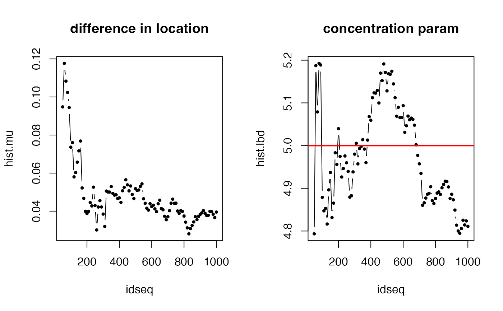

We provide tools for an isotropic spherical normal (SN) distributions on a \((p-1)\)-sphere in \(\mathbf{R}^p\) for sampling, density evaluation, and maximum likelihood estimation of the parameters where the density is defined as $$f_{SN}(x; \mu, \lambda) = \frac{1}{Z(\lambda)} \exp \left( -\frac{\lambda}{2} d^2(x,\mu) \right)$$ for location and concentration parameters \(\mu\) and \(\lambda\) respectively and the normalizing constant \(Z(\lambda)\).
dspnorm(data, mu, lambda, log = FALSE) rspnorm(n, mu, lambda) mle.spnorm(data, method = c("Newton", "Halley", "Optimize", "DE"), ...)
| data | data vectors in form of either an \((n\times p)\) matrix or a length-\(n\) list. See |
|---|---|
| mu | a length-\(p\) unit-norm vector of location. |
| lambda | a concentration parameter that is positive. |
| log | a logical; |
| n | the number of samples to be generated. |
| method | an algorithm name for concentration parameter estimation. It should be one of |
| ... | extra parameters for computations, including
|
dspnorm gives a vector of evaluated densities given samples. rspnorm generates
unit-norm vectors in \(\mathbf{R}^p\) wrapped in a list. mle.spnorm computes MLEs and returns a list
containing estimates of location (mu) and concentration (lambda) parameters.
Hauberg S (2018). “Directional Statistics with the Spherical Normal Distribution.” In 2018 21st International Conference on Information Fusion (FUSION), 704--711. ISBN 978-0-9964527-6-2.
You K, Suh C (2022). “Parameter Estimation and Model-Based Clustering with Spherical Normal Distribution on the Unit Hypersphere.” Computational Statistics \& Data Analysis, 107457. ISSN 01679473.
# \donttest{ # ------------------------------------------------------------------- # Example with Spherical Normal Distribution # # Given a fixed set of parameters, generate samples and acquire MLEs. # Especially, we will see the evolution of estimation accuracy. # ------------------------------------------------------------------- ## DEFAULT PARAMETERS true.mu = c(1,0,0,0,0) true.lbd = 5 ## GENERATE DATA N=1000 big.data = rspnorm(1000, true.mu, true.lbd) ## ITERATE FROM 50 TO 1000 by 10 idseq = seq(from=50, to=1000, by=10) nseq = length(idseq) hist.mu = rep(0, nseq) hist.lbd = rep(0, nseq) for (i in 1:nseq){ small.data = big.data[1:idseq[i]] # data subsetting small.MLE = mle.spnorm(small.data) # compute MLE hist.mu[i] = acos(sum(small.MLE$mu*true.mu)) # difference in mu hist.lbd[i] = small.MLE$lambda } ## VISUALIZE opar <- par(no.readonly=TRUE) par(mfrow=c(1,2)) plot(idseq, hist.mu, "b", pch=19, cex=0.5, main="difference in location") plot(idseq, hist.lbd, "b", pch=19, cex=0.5, main="concentration param") abline(h=true.lbd, lwd=2, col="red")  par(opar) # }